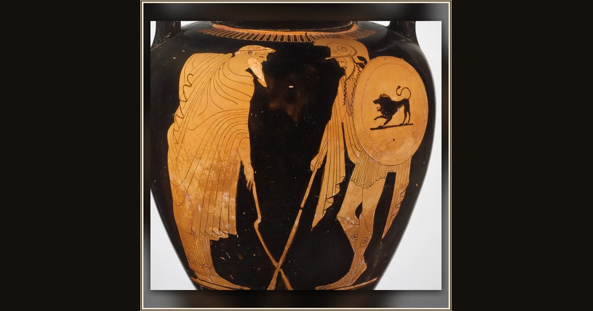

Terracotta neck-amphora (jar) with twisted handles
Matsch Painter · ca. 480 BCE · met
A shielded warrior holding a spear faces a cloaked man on a terracotta amphora; Aristotle says courage faces the dangers of battle and the prospect of death (3.6). Explore its place in Aristotle's Nicomachean Ethics, Book III, section 6.